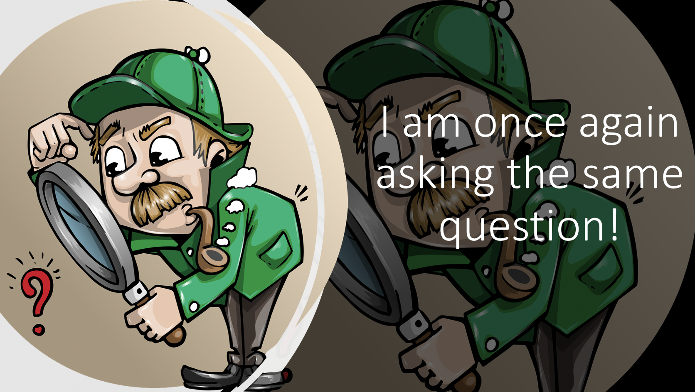
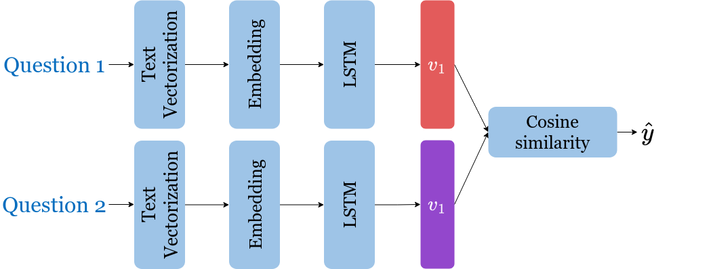

Assignment 3: Question duplicates#
Welcome to the third assignment of course 3. In this assignment you will explore Siamese networks applied to natural language processing. You will further explore the fundamentals of TensorFlow and you will be able to implement a more complicated structure using it. By completing this assignment, you will learn how to implement models with different architectures.
Overview#
In particular, in this assignment you will:
Learn about Siamese networks
Understand how the triplet loss works
Understand how to evaluate accuracy
Use cosine similarity between the model’s outputted vectors
Use the data generator to get batches of questions
Predict using your own model
Before getting started take some time to read the following tips:
TIPS FOR SUCCESSFUL GRADING OF YOUR ASSIGNMENT:#
All cells are frozen except for the ones where you need to submit your solutions.
You can add new cells to experiment but these will be omitted by the grader, so don’t rely on newly created cells to host your solution code, use the provided places for this.
You can add the comment # grade-up-to-here in any graded cell to signal the grader that it must only evaluate up to that point. This is helpful if you want to check if you are on the right track even if you are not done with the whole assignment. Be sure to remember to delete the comment afterwards!
To submit your notebook, save it and then click on the blue submit button at the beginning of the page.
By now, you should be familiar with Tensorflow and know how to make use of it to define your model. We will start this homework by asking you to create a vocabulary in a similar way as you did in the previous assignments. After this, you will build a classifier that will allow you to identify whether two questions are the same or not.

Your model will take in the two questions, which will be transformed into tensors, each tensor will then go through embeddings, and after that an LSTM. Finally you will compare the outputs of the two subnetworks using cosine similarity.
Before taking a deep dive into the model, you will start by importing the data set, and exploring it a bit.
#
Part 1: Importing the Data#
1.1 Loading in the data#
You will be using the ‘Quora question answer’ dataset to build a model that can identify similar questions. This is a useful task because you don’t want to have several versions of the same question posted. Several times when teaching I end up responding to similar questions on piazza, or on other community forums. This data set has already been labeled for you. Run the cell below to import some of the packages you will be using.
import os
os.environ['TF_CPP_MIN_LOG_LEVEL'] = '3'
import os
import numpy as np
import pandas as pd
import random as rnd
import tensorflow as tf
# Set random seeds
rnd.seed(34)
import w3_unittest
---------------------------------------------------------------------------
ModuleNotFoundError Traceback (most recent call last)
Cell In[2], line 1
----> 1 import w3_unittest
File C:\Github\Coursera_Materials\coursera_notes\NLP\C3_W3\w3_unittest.py:4
2 from typing import Any, Callable, List, Optional, Union
3 from typing import Dict, List, Optional
----> 4 from dlai_grader.grading import test_case, LearnerSubmission, object_to_grade
5 from dlai_grader.types import grading_function, grading_wrapper
6 from dlai_grader.grading import compute_grading_score
ModuleNotFoundError: No module named 'dlai_grader'
You will now load the data set. We have done some preprocessing for you. If you have taken the deeplearning specialization, this is a slightly different training method than the one you have seen there. If you have not, then don’t worry about it, we will explain everything.
data = pd.read_csv("questions.csv")
N = len(data)
print('Number of question pairs: ', N)
data.head()
First, you will need to split the data into a training and test set. The test set will be used later to evaluate your model.
N_train = 300000
N_test = 10240
data_train = data[:N_train]
data_test = data[N_train:N_train + N_test]
print("Train set:", len(data_train), "Test set:", len(data_test))
del (data) # remove to free memory
As explained in the lectures, you will select only the question pairs that are duplicate to train the model.
You need to build two sets of questions as input for the Siamese network, assuming that question \(q1_i\) (question \(i\) in the first set) is a duplicate of \(q2_i\) (question \(i\) in the second set), but all other questions in the second set are not duplicates of \(q1_i\).
The test set uses the original pairs of questions and the status describing if the questions are duplicates.
The following cells are in charge of selecting only duplicate questions from the training set, which will give you a smaller dataset. First find the indexes with duplicate questions.
You will start by identifying the indexes in the training set which correspond to duplicate questions. For this you will define a boolean variable td_index, which has value True if the index corresponds to duplicate questions and False otherwise.
td_index = data_train['is_duplicate'] == 1
td_index = [i for i, x in enumerate(td_index) if x]
print('Number of duplicate questions: ', len(td_index))
print('Indexes of first ten duplicate questions:', td_index[:10])
You will first need to split the data into a training and test set. The test set will be used later to evaluate your model.
print(data_train['question1'][5])
print(data_train['question2'][5])
print('is_duplicate: ', data_train['is_duplicate'][5])
Next, keep only the rows in the original training set that correspond to the rows where td_index is True
Q1_train = np.array(data_train['question1'][td_index])
Q2_train = np.array(data_train['question2'][td_index])
Q1_test = np.array(data_test['question1'])
Q2_test = np.array(data_test['question2'])
y_test = np.array(data_test['is_duplicate'])
Let’s print to see what your data looks like.
print('TRAINING QUESTIONS:\n')
print('Question 1: ', Q1_train[0])
print('Question 2: ', Q2_train[0], '\n')
print('Question 1: ', Q1_train[5])
print('Question 2: ', Q2_train[5], '\n')
print('TESTING QUESTIONS:\n')
print('Question 1: ', Q1_test[0])
print('Question 2: ', Q2_test[0], '\n')
print('is_duplicate =', y_test[0], '\n')
Finally, split your training set into training/validation sets so that you can use them at training time.
# Splitting the data
cut_off = int(len(Q1_train) * 0.8)
train_Q1, train_Q2 = Q1_train[:cut_off], Q2_train[:cut_off]
val_Q1, val_Q2 = Q1_train[cut_off:], Q2_train[cut_off:]
print('Number of duplicate questions: ', len(Q1_train))
print("The length of the training set is: ", len(train_Q1))
print("The length of the validation set is: ", len(val_Q1))
1.2 Learning question encoding#
The next step is to learn how to encode each of the questions as a list of numbers (integers). You will be learning how to encode each word of the selected duplicate pairs with an index.
You will start by learning a word dictionary, or vocabulary, containing all the words in your training dataset, which you will use to encode each word of the selected duplicate pairs with an index.
For this task you will be using the TextVectorization layer from Keras. which will take care of everything for you. Begin by setting a seed, so we all get the same encoding.
tf.random.set_seed(0)
text_vectorization = tf.keras.layers.TextVectorization(output_mode='int',split='whitespace', standardize='strip_punctuation')
text_vectorization.adapt(np.concatenate((Q1_train,Q2_train)))
As you can see, it is set to split text on whitespaces and it’s stripping the punctuation from text. You can check how big your vocabulary is.
print(f'Vocabulary size: {text_vectorization.vocabulary_size()}')
You can also call text_vectorization to see what the encoding looks like for the first questions of the training and test datasets
print('first question in the train set:\n')
print(Q1_train[0], '\n')
print('encoded version:')
print(text_vectorization(Q1_train[0]),'\n')
print('first question in the test set:\n')
print(Q1_test[0], '\n')
print('encoded version:')
print(text_vectorization(Q1_test[0]) )
Expected output:
first question in the train set:
Astrology: I am a Capricorn Sun Cap moon and cap rising...what does that say about me?
encoded version:
tf.Tensor(
[ 6984 6 178 10 8988 2442 35393 761 13 6636 28205 31
28 483 45 98], shape=(16,), dtype=int64)
first question in the test set:
How do I prepare for interviews for cse?
encoded version:
tf.Tensor([ 4 8 6 160 17 2079 17 11775], shape=(8,), dtype=int64)
Part 2: Defining the Siamese model#
2.1 Understanding the Siamese Network#
A Siamese network is a neural network which uses the same weights while working in tandem on two different input vectors to compute comparable output vectors. The Siamese network you are about to implement looks something like this:

You get the question, get it vectorized and embedded, run it through an LSTM layer, normalize \(v_1\) and \(v_2\), and finally get the corresponding cosine similarity for each pair of questions. Because of the implementation of the loss function you will see in the next section, you are not going to have the cosine similarity as output of your Siamese network, but rather \(v_1\) and \(v_2\). You will add the cosine distance step once you reach the classification step.
To train the model, you will use the triplet loss (explained below). This loss makes use of a baseline (anchor) input that is compared to a positive (truthy) input and a negative (falsy) input. The (cosine) distance from the baseline input to the positive input is minimized, and the distance from the baseline input to the negative input is maximized. Mathematically, you are trying to maximize the following.
where \(A\) is the anchor input, for example \(q1_1\), \(P\) is the duplicate input, for example, \(q2_1\), and \(N\) is the negative input (the non duplicate question), for example \(q2_2\).
\(\alpha\) is a margin; you can think about it as a safety net, or by how much you want to push the duplicates from the non duplicates. This is the essence of the triplet loss. However, as you will see in the next section, you will be using a pretty smart trick to improve your training, known as hard negative mining.
Exercise 01#
Instructions: Implement the Siamese function below. You should be using all the functions explained below.
To implement this model, you will be using TensorFlow. Concretely, you will be using the following functions.
tf.keras.models.Sequential: groups a linear stack of layers into a tf.keras.Model.You can pass in the layers as arguments to
Sequential, separated by commas, or simply instantiate theSequentialmodel and use theaddmethod to add layers.For example:
Sequential(Embeddings(...), AveragePooling1D(...), Dense(...), Softmax(...))or
model = Sequential() model.add(Embeddings(...)) model.add(AveragePooling1D(...)) model.add(Dense(...)) model.add(Softmax(...))tf.keras.layers.Embedding: Maps positive integers into vectors of fixed size. It will have shape (vocabulary length X dimension of output vectors). The dimension of output vectors (calledd_featurein the model) is the number of elements in the word embedding.Embedding(input_dim, output_dim).input_dimis the number of unique words in the given vocabulary.output_dimis the number of elements in the word embedding (some choices for a word embedding size range from 150 to 300, for example).
tf.keras.layers.LSTM: The LSTM layer. The number of units should be specified and should match the number of elements in the word embedding.LSTM(units)Builds an LSTM layer of n_units.
tf.keras.layers.GlobalAveragePooling1D: Computes global average pooling, which essentially takes the mean across a desired axis. GlobalAveragePooling1D uses one tensor axis to form groups of values and replaces each group with the mean value of that group.GlobalAveragePooling1D()takes the mean.
tf.keras.layers.Lambda: Layer with no weights that applies the function f, which should be specified using a lambda syntax. You will use this layer to apply normalization with the functiontfmath.l2_normalize(x)
tf.keras.layers.Input: it is used to instantiate a Keras tensor. Remember to set correctly the dimension and type of the input, which are batches of questions. For this, keep in mind that each question is a single string.Input(input_shape,dtype=None,...)input_shape: Shape tuple (not including the batch axis)dtype: (optional) data type of the input
tf.keras.layers.Concatenate: Layer that concatenates a list of inputs. This layer will concatenate the normalized outputs of each LSTM into a single output for the model.Concatenate()
# GRADED FUNCTION: Siamese
def Siamese(text_vectorizer, vocab_size=36224, d_feature=128):
"""Returns a Siamese model.
Args:
text_vectorizer (TextVectorization): TextVectorization instance, already adapted to your training data.
vocab_size (int, optional): Length of the vocabulary. Defaults to 56400.
d_feature (int, optional): Depth of the model. Defaults to 128.
Returns:
tf.model.Model: A Siamese model.
"""
### START CODE HERE ###
branch = tf.keras.models.Sequential(name='sequential')
# Add the text_vectorizer layer. This is the text_vectorizer you instantiated and trained before
branch.add(None)
# Add the Embedding layer. Remember to call it 'embedding' using the parameter `name`
branch.add(None)
# Add the LSTM layer, recall from W2 that you want to the LSTM layer to return sequences, ot just one value.
# Remember to call it 'LSTM' using the parameter `name`
branch.add(None)
# Add the GlobalAveragePooling1D layer. Remember to call it 'mean' using the parameter `name`
branch.add(None)
# Add the normalizing layer using the Lambda function. Remember to call it 'out' using the parameter `name`
branch.add(None)
# Define both inputs. Remember to call then 'input_1' and 'input_2' using the `name` parameter.
# Be mindful of the data type and size
input1 = tf.keras.layers.Input(None, dtype=None, name='input_1')
input2 = tf.keras.layers.Input(None, dtype=None, name='input_2')
# Define the output of each branch of your Siamese network. Remember that both branches have the same coefficients,
# but they each receive different inputs.
branch1 = None
branch2 = None
# Define the Concatenate layer. You should concatenate columns, you can fix this using the `axis`parameter.
# This layer is applied over the outputs of each branch of the Siamese network
conc = tf.keras.layers.Concatenate(axis=None, name='conc_1_2')([None, None])
### END CODE HERE ###
return tf.keras.models.Model(inputs=[input1, input2], outputs=conc, name="SiameseModel")
Setup the Siamese network model
# check your model
model = Siamese(text_vectorization, vocab_size=text_vectorization.vocabulary_size())
model.build(input_shape=None)
model.summary()
model.get_layer(name='sequential').summary()
Expected output:
__________________________________________________________________________________________________
Layer (type) Output Shape Param # Connected to
==================================================================================================
input_1 (InputLayer) [(None, 1)] 0 []
input_2 (InputLayer) [(None, 1)] 0 []
sequential (Sequential) (None, 128) 4768256 ['input_1[0][0]',
'input_2[0][0]']
conc_1_2 (Concatenate) (None, 256) 0 ['sequential[0][0]',
'sequential[1][0]']
==================================================================================================
Total params: 4768256 (18.19 MB)
Trainable params: 4768256 (18.19 MB)
Non-trainable params: 0 (0.00 Byte)
__________________________________________________________________________________________________
Model: "sequential"
_________________________________________________________________
Layer (type) Output Shape Param #
=================================================================
text_vectorization (TextVe (None, None) 0
ctorization)
embedding (Embedding) (None, None, 128) 4636672
LSTM (LSTM) (None, None, 128) 131584
mean (GlobalAveragePooling (None, 128) 0
1D)
out (Lambda) (None, 128) 0
=================================================================
Total params: 4768256 (18.19 MB)
Trainable params: 4768256 (18.19 MB)
Non-trainable params: 0 (0.00 Byte)
_________________________________________________________________
You can also draw the model for a clearer view of your Siamese network
tf.keras.utils.plot_model(
model,
to_file="model.png",
show_shapes=True,
show_dtype=True,
show_layer_names=True,
rankdir="TB",
expand_nested=True)
# Test your function!
w3_unittest.test_Siamese(Siamese)
2.2 Hard Negative Mining#
You will now implement the TripletLoss with hard negative mining.
As explained in the lecture, you will be using all the questions from each batch to compute this loss. Positive examples are questions \(q1_i\), and \(q2_i\), while all the other combinations \(q1_i\), \(q2_j\) (\(i\neq j\)), are considered negative examples. The loss will be composed of two terms. One term utilizes the mean of all the non duplicates, the second utilizes the closest negative. Our loss expression is then:
\begin{align} \mathcal{Loss_1(A,P,N)} &=\max \left( -cos(A,P) + mean_{neg} +\alpha, 0\right) \ \mathcal{Loss_2(A,P,N)} &=\max \left( -cos(A,P) + closest_{neg} +\alpha, 0\right) \ \mathcal{Loss(A,P,N)} &= mean(Loss_1 + Loss_2) \ \end{align}
Further, two sets of instructions are provided. The first set, found just below, provides a brief description of the task. If that set proves insufficient, a more detailed set can be displayed.
Exercise 02#
Instructions (Brief): Here is a list of things you should do:
As this will be run inside Tensorflow, use all operation supplied by
tf.mathortf.linalg, instead ofnumpyfunctions. You will also need to explicitly usetf.shapeto get the batch size from the inputs. This is to make it compatible with the Tensor inputs it will receive when doing actual training and testing.Use
tf.linalg.matmulto calculate the similarity matrix \(v_2v_1^T\) of dimensionbatch_sizexbatch_size.Take the score of the duplicates on the diagonal with
tf.linalg.diag_part.Use the
TensorFlowfunctionstf.eyeandtf.math.reduce_maxfor the identity matrix and the maximum respectively.
More Detailed Instructions
We’ll describe the algorithm using a detailed example. Below, \(V_1\), \(V_2\) are the output of the normalization blocks in our model. Here you will use a batch_size of 4 and a d_model of 3. As explained in lecture, the input questions, Q1, Q2 are arranged so that corresponding inputs are duplicates while non-corresponding entries are not. The outputs will have the same pattern.

This testcase arranges the outputs, \(V_1\),\(V_2\), to highlight different scenarios. Here, the first two outputs \(V_1[0]\), \(V_2[0]\) match exactly, so the model is generating the same vector for Q1[0] and Q2[0] inputs. The second pair of outputs, circled in orange, differ greatly on one of the values, so the transformation is not quite the same for these questions. Next, you have examples \(V_1[3]\) and \(V_2[3]\), which match almost exactly. Finally, \(V_1[4]\) and \(V_2[4]\), circled in purple, are set to be exactly opposite, being 180 degrees from each other.
The first step is to compute the cosine similarity matrix or score in the code. As explained in the lectures, this is $\(V_2 V_1^T.\)\(This is generated with `tf.linalg.matmul`. Since matrix multiplication is not commutative, the order in which you pass the arguments is important. If you want columns to represent different questions in Q1 and rows to represent different questions in Q2, as seen in the video, then you need to compute \)V_2 V_1^T$.

The clever arrangement of inputs creates the data needed for positive and negative examples without having to run all pair-wise combinations. Because Q1[n] is a duplicate of only Q2[n], other combinations are explicitly created negative examples or Hard Negative examples. The matrix multiplication efficiently produces the cosine similarity of all positive/negative combinations as shown above on the left side of the diagram. ‘Positive’ are the results of duplicate examples (cells shaded in green) and ‘negative’ are the results of explicitly created negative examples (cells shaded in blue). The results for our test case are as expected, \(V_1[0]\cdot V_2[0]\) and \(V_1[3]\cdot V_2[3]\) match producing ‘1’, and ‘0.99’ respectively, while the other ‘positive’ cases don’t match quite right. Note also that the \(V_2[2]\) example was set to match \(V_1[3]\), producing a not so good match at score[2,2] and an undesired ‘negative’ case of a ‘1’, shown in grey.
With the similarity matrix (score) you can begin to implement the loss equations. First, you can extract \(cos(A,P)\) by utilizing tf.linalg.diag_part. The goal is to grab all the green entries in the diagram above. This is positive in the code.
Next, you will create the closest_negative. This is the nonduplicate entry in \(V_2\) that is closest to (has largest cosine similarity) to an entry in \(V_1\), but still has smaller cosine similarity than the positive example. For example, consider row 2 in the score matrix. This row has the cosine similarity between \(V_2[2]\) and all four vectors in \(V_1\). In this case, the largest value in the off-diagonal isscore[2,3]\(=V_2[3]\cdot V1[2]\), which has a score of 1. However, since 1 is grater than the similarity for the positive example, this is not the closest_negative. For this particular row, the closes_negative will have to be score[2,1]=0.36. This is the maximum value of the ‘negative’ entries, which are smaller than the ‘positive’ example.
To implement this, you need to pick the maximum entry on a row of score, ignoring the ‘positive’/green entries, and ‘negative/blue entry greater that the ‘positive’ one. To avoid selecting these entries, you can make them larger negative numbers. For this, you can create a mask to identify these two scenarios, multiply it by 2.0 and subtract it out of scores. To create the mask, you need to check if the cell is diagonal by computing tf.eye(batch_size) ==1, or if the non-diagonal cell is greater than the diagonal with (negative_zero_on_duplicate > tf.expand_dims(positive, 1). Remember that positive already has the diagonal values. Now you can use tf.math.reduce_max, row by row (axis=1), to select the maximum which is closest_negative.
Next, we’ll create mean_negative. As the name suggests, this is the mean of all the ‘negative’/blue values in score on a row by row basis. You can use tf.linalg.diag to create a diagonal matrix, where the diagonal matches positive, and just subtract it from score to get just the ‘negative’ values. This is negative_zero_on_duplicate in the code. Compute the mean by using tf.math.reduce_sum on negative_zero_on_duplicate for axis=1 and divide it by (batch_size - 1). This is mean_negative.
Now, you can compute loss using the two equations above and tf.maximum. This will form triplet_loss1 and triplet_loss2.
triplet_loss is the tf.math.reduce_sum of the sum of the two individual losses.
# GRADED FUNCTION: TripletLossFn
def TripletLossFn(v1, v2, margin=0.25):
"""Custom Loss function.
Args:
v1 (numpy.ndarray or Tensor): Array with dimension (batch_size, model_dimension) associated to Q1.
v2 (numpy.ndarray or Tensor): Array with dimension (batch_size, model_dimension) associated to Q2.
margin (float, optional): Desired margin. Defaults to 0.25.
Returns:
triplet_loss (numpy.ndarray or Tensor)
"""
### START CODE HERE ###
# use `tf.linalg.matmul` to take the dot product of the two batches.
# Don't forget to transpose the second argument using `transpose_b=True`
scores = None
# calculate new batch size and cast it as the same datatype as scores.
batch_size = tf.cast(tf.shape(v1)[0], scores.dtype)
# use `tf.linalg.diag_part` to grab the cosine similarity of all positive examples
positive = None
# subtract the diagonal from scores. You can do this by creating a diagonal matrix with the values
# of all positive examples using `tf.linalg.diag`
negative_zero_on_duplicate = None
# use `tf.math.reduce_sum` on `negative_zero_on_duplicate` for `axis=1` and divide it by `(batch_size - 1)`
mean_negative = None
# create a composition of two masks:
# the first mask to extract the diagonal elements,
# the second mask to extract elements in the negative_zero_on_duplicate matrix that are larger than the elements in the diagonal
mask_exclude_positives = tf.cast((None)|(None),
scores.dtype)
# multiply `mask_exclude_positives` with 2.0 and subtract it out of `negative_zero_on_duplicate`
negative_without_positive = None
# take the row by row `max` of `negative_without_positive`.
# Hint: `tf.math.reduce_max(negative_without_positive, axis = None
closest_negative = None
# compute `tf.maximum` among 0.0 and `A`
# A = subtract `positive` from `margin` and add `closest_negative`
triplet_loss1 = None
# compute `tf.maximum` among 0.0 and `B`
# B = subtract `positive` from `margin` and add `mean_negative`
triplet_loss2 = None
# add the two losses together and take the `tf.math.reduce_sum` of it
triplet_loss = None
### END CODE HERE ###
return triplet_loss
Now you can check the triplet loss between two sets. The following example emulates the triplet loss between two groups of questions with batch_size=2
v1 = np.array([[0.26726124, 0.53452248, 0.80178373],[0.5178918 , 0.57543534, 0.63297887]])
v2 = np.array([[ 0.26726124, 0.53452248, 0.80178373],[-0.5178918 , -0.57543534, -0.63297887]])
print("Triplet Loss:", TripletLossFn(v1,v2).numpy())
Expected Output:
Triplet Loss: ~ 0.70
To recognize it as a loss function, keras needs it to have two inputs: true labels, and output labels. You will not be using the true labels, but you still need to pass some dummy variable with size (batch_size,) for TensorFlow to accept it as a valid loss.
Additionally, the out parameter must coincide with the output of your Siamese network, which is the concatenation of the processing of each of the inputs, so you need to extract \(v_1\) and \(v_2\) from there.
def TripletLoss(labels, out, margin=0.25):
_, embedding_size = out.shape # get embedding size
v1 = out[:,:int(embedding_size/2)] # Extract v1 from out
v2 = out[:,int(embedding_size/2):] # Extract v2 from out
return TripletLossFn(v1, v2, margin=margin)
# Test your function!
w3_unittest.test_TripletLoss(TripletLoss)
Part 3: Training#
Now it’s time to finally train your model. As usual, you have to define the cost function and the optimizer. You also have to build the actual model you will be training.
To pass the input questions for training and validation you will use the iterator produced by tensorflow.data.Dataset. Run the next cell to create your train and validation datasets.
train_dataset = tf.data.Dataset.from_tensor_slices(((train_Q1, train_Q2),tf.constant([1]*len(train_Q1))))
val_dataset = tf.data.Dataset.from_tensor_slices(((val_Q1, val_Q2),tf.constant([1]*len(val_Q1))))
3.1 Training the model#
You will now write a function that takes in your model to train it. To train your model you have to decide how many times you want to iterate over the entire data set; each iteration is defined as an epoch. For each epoch, you have to go over all the data, using your Dataset iterator.
Exercise 03#
Instructions: Implement the train_model below to train the neural network above. Here is a list of things you should do:
Compile the model. Here you will need to pass in:
loss=TripletLossoptimizer=Adam()with learning ratelr
Call the
fitmethod. You should pass:train_datasetepochsvalidation_data
You will be using your triplet loss function with Adam optimizer. Also, note that you are not explicitly defining the batch size, because it will be already determined by the Dataset.
This function will return the trained model
# GRADED FUNCTION: train_model
def train_model(Siamese, TripletLoss, text_vectorizer, train_dataset, val_dataset, d_feature=128, lr=0.01, epochs=5):
"""Training the Siamese Model
Args:
Siamese (function): Function that returns the Siamese model.
TripletLoss (function): Function that defines the TripletLoss loss function.
text_vectorizer: trained instance of `TextVecotrization`
train_dataset (tf.data.Dataset): Training dataset
val_dataset (tf.data.Dataset): Validation dataset
d_feature (int, optional): size of the encoding. Defaults to 128.
lr (float, optional): learning rate for optimizer. Defaults to 0.01
epochs (int): number of epochs
Returns:
tf.keras.Model
"""
## START CODE HERE ###
# Instantiate your Siamese model
model = Siamese(None,
vocab_size = None, #set vocab_size accordingly to the size of your vocabulary
d_feature = None)
# Compile the model
model.compile(loss=None,
optimizer = None
)
# Train the model
model.fit(None,
epochs = None,
validation_data = None,
)
### END CODE HERE ###
return model
Now call the train_model function. You will be using a batch size of 256.
To create the data generators you will be using the method batch for Dataset object. You will also call the shuffle method, to shuffle the dataset on each iteration.
epochs = 2
batch_size = 256
train_generator = train_dataset.shuffle(len(train_Q1),
seed=7,
reshuffle_each_iteration=True).batch(batch_size=batch_size)
val_generator = val_dataset.shuffle(len(val_Q1),
seed=7,
reshuffle_each_iteration=True).batch(batch_size=batch_size)
model = train_model(Siamese, TripletLoss,text_vectorization,
train_generator,
val_generator,
epochs=epochs,)
The model was only trained for 2 steps because training the whole Siamese network takes too long, and produces slightly different results for each run. For the rest of the assignment you will be using a pretrained model, but this small example should help you understand how the training can be done.
# Test your function!
w3_unittest.test_train_model(train_model, Siamese, TripletLoss)
Part 4: Evaluation#
4.1 Evaluating your siamese network#
In this section you will learn how to evaluate a Siamese network. You will start by loading a pretrained model, and then you will use it to predict. For the prediction you will need to take the output of your model and compute the cosine loss between each pair of questions.
model = tf.keras.models.load_model('model/trained_model.keras', safe_mode=False, compile=False)
# Show the model architecture
model.summary()
4.2 Classify#
To determine the accuracy of the model, you will use the test set that was configured earlier. While in training you used only positive examples, the test data, Q1_test, Q2_test and y_test, is set up as pairs of questions, some of which are duplicates and some are not.
This routine will run all the test question pairs through the model, compute the cosine similarity of each pair, threshold it and compare the result to y_test - the correct response from the data set. The results are accumulated to produce an accuracy; the confusion matrix is also computed to have a better understanding of the errors.
Exercise 04#
Instructions
Loop through the incoming data in batch_size chunks, you will again define a
tensorflow.data.Datasetto do so. This time you don’t need the labels, so you can just replace them byNone,split the model output pred into v1 and v2. Note that v1 is the first part of the pred while v2 is the second part of pred (see how the split was accomplished in TripletLoss function above),
for each element of the batch - Find the cosine similarity between
v1andv2: Multiplyv1andv2element-wise and usetf.math.reduce_sumon the result. This operation is the same as vector dot product and the resulting value is cosine similarity sincev1andv2are normalized (by your model’s last layer), - determine ifd > threshold, - increment accuracy if that result matches the expected results (y_test[j]).Instead of running a for loop, you will vectorize all these operations to make things more efficient,
compute the final accuracy and confusion matrix and return. For the confusion matrix you can use the
tf.math.confusion_matrixfunction.
# GRADED FUNCTION: classify
def classify(test_Q1, test_Q2, y_test, threshold, model, batch_size=64, verbose=True):
"""Function to test the accuracy of the model.
Args:
test_Q1 (numpy.ndarray): Array of Q1 questions. Each element of the array would be a string.
test_Q2 (numpy.ndarray): Array of Q2 questions. Each element of the array would be a string.
y_test (numpy.ndarray): Array of actual target.
threshold (float): Desired threshold
model (tensorflow.Keras.Model): The Siamese model.
batch_size (int, optional): Size of the batches. Defaults to 64.
Returns:
float: Accuracy of the model
numpy.array: confusion matrix
"""
y_pred = []
test_gen = tf.data.Dataset.from_tensor_slices(((test_Q1, test_Q2),None)).batch(batch_size=batch_size)
### START CODE HERE ###
pred = None
_, n_feat = None
v1 = None
v2 = None
# Compute the cosine similarity. Using `tf.math.reduce_sum`.
# Don't forget to use the appropriate axis argument.
d = None
# Check if d>threshold to make predictions
y_pred = tf.cast(None, tf.float64)
# take the average of correct predictions to get the accuracy
accuracy = None
# compute the confusion matrix using `tf.math.confusion_matrix`
cm = None
### END CODE HERE ###
return accuracy, cm
# this takes around 1 minute
accuracy, cm = classify(Q1_test,Q2_test, y_test, 0.7, model, batch_size = 512)
print("Accuracy", accuracy.numpy())
print(f"Confusion matrix:\n{cm.numpy()}")
Expected Result#
Accuracy ~0.725
Confusion matrix:
[[4876 1506]
[1300 2558]]
# Test your function!
w3_unittest.test_classify(classify, model)
Part 5: Testing with your own questions#
In this final section you will test the model with your own questions. You will write a function predict which takes two questions as input and returns True or False depending on whether the question pair is a duplicate or not.
Write a function predict that takes in two questions, the threshold and the model, and returns whether the questions are duplicates (True) or not duplicates (False) given a similarity threshold.
Exercise 05#
Instructions:
Create a tensorflow.data.Dataset from your two questions. Again, labels are not important, so you simply write None (this is completed for you),
use the trained model output to extract v1, v2 (similar to Exercise 04),
compute the cosine similarity (dot product) of v1, v2 (similarly to Exercise 04),
compute res (the decision if questions are duplicate or not) by comparing d to the threshold.
# GRADED FUNCTION: predict
def predict(question1, question2, threshold, model, verbose=False):
"""Function for predicting if two questions are duplicates.
Args:
question1 (str): First question.
question2 (str): Second question.
threshold (float): Desired threshold.
model (tensorflow.keras.Model): The Siamese model.
data_generator (function): Data generator function. Defaults to data_generator.
verbose (bool, optional): If the results should be printed out. Defaults to False.
Returns:
bool: True if the questions are duplicates, False otherwise.
"""
generator = tf.data.Dataset.from_tensor_slices((([question1], [question2]),None)).batch(batch_size=1)
### START CODE HERE ###
# Call the predict method of your model and save the output into v1v2
v1v2 = None
# Extract v1 and v2 from the model output
v1 = None
v2 = None
# Take the dot product to compute cos similarity of each pair of entries, v1, v2
# Since v1 and v2 are both vectors, use the function tf.math.reduce_sum instead of tf.linalg.matmul
d = None
# Is d greater than the threshold?
res = None
### END CODE HERE ###
if(verbose):
print("Q1 = ", question1, "\nQ2 = ", question2)
print("d = ", d.numpy())
print("res = ", res.numpy())
return res.numpy()
# Feel free to try with your own questions
question1 = "When will I see you?"
question2 = "When can I see you again?"
# 1 means it is duplicated, 0 otherwise
predict(question1 , question2, 0.7, model, verbose = True)
Expected Output#
If input is:
question1 = "When will I see you?"
question2 = "When can I see you again?"
Output is (d may vary a bit):
1/1 [==============================] - 0s 13ms/step
Q1 = When will I see you?
Q2 = When can I see you again?
d = 0.8422112
res = True
# Feel free to try with your own questions
question1 = "Do they enjoy eating the dessert?"
question2 = "Do they like hiking in the desert?"
# 1 means it is duplicated, 0 otherwise
predict(question1 , question2, 0.7, model, verbose=True)
Expected output#
If input is:
question1 = "Do they enjoy eating the dessert?"
question2 = "Do they like hiking in the desert?"
Output (d may vary a bit):
1/1 [==============================] - 0s 12ms/step
Q1 = Do they enjoy eating the dessert?
Q2 = Do they like hiking in the desert?
d = 0.12625802
res = False
False
You can see that the Siamese network is capable of catching complicated structures. Concretely it can identify question duplicates although the questions do not have many words in common.
# Test your function!
w3_unittest.test_predict(predict, model)
On Siamese networks#
Siamese networks are important and useful. Many times there are several questions that are already asked in quora, or other platforms and you can use Siamese networks to avoid question duplicates.
Congratulations, you have now built a powerful system that can recognize question duplicates. In the next course we will use transformers for machine translation, summarization, question answering, and chatbots.